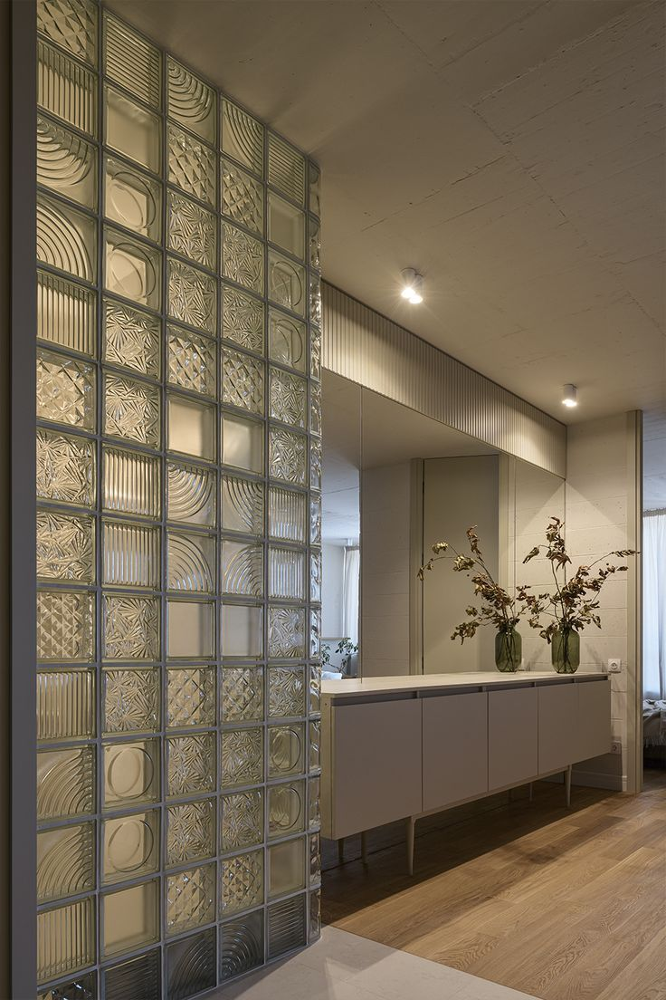

About Our Glass Blocks
At Tensorgrid Ltd, we supply high-quality glass blocks designed to combine strength, privacy, and natural light. Glass blocks are ideal for both interior and exterior applications, offering a modern architectural solution that enhances aesthetics while maintaining functionality.
They allow light to pass through while providing privacy and insulation, making them a popular choice for decorative and structural features.
Glass Block Specifications
Types of Glass Blocks
Clear Glass Blocks
Clear glass blocks allow maximum light transmission while still offering slight diffusion for privacy.
- Bright and transparent appearance
- Enhances natural lighting
- Clean and modern look
Applications: Interior walls, Partitions, Feature walls
Colored Glass Blocks
Colored glass blocks add a decorative element while maintaining the functional benefits of glass blocks.
- Available in various colors
- Enhances interior and exterior design
- Maintains light transmission
Applications: Decorative walls, Accent features, Commercial interiors
Misty Colored Glass Blocks
Misty colored glass blocks combine color with a frosted or diffused finish for enhanced privacy.
- Soft, diffused light
- Increased privacy
- Stylish and modern appearance
Applications: Bathrooms, Partitions, Private spaces
Clear Patterned Glass Blocks
These glass blocks feature textured patterns that distort visibility while allowing light to pass through.
- Decorative patterns
- Enhanced privacy
- Unique visual effect
Applications: Feature walls, Shower areas, Interior decor
Applications of Glass Blocks
- Interior and exterior walls
- Bathroom partitions
- Staircase walls
- Office partitions
- Decorative features
- Commercial buildings
Why Choose Our Glass Blocks?
- High-quality and durable materials
- Standard and decorative options available
- Enhances both light and privacy
- Suitable for modern architectural designs
- Easy to maintain